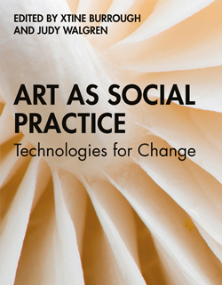
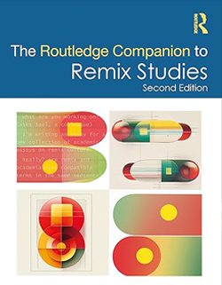
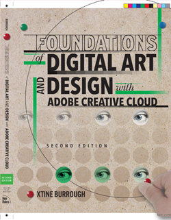
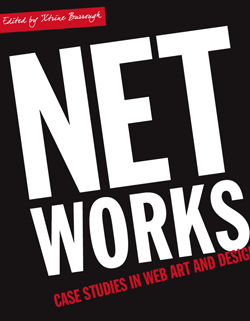
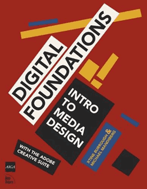

ON WRITING
Writing is integral to my practice. I write to reflect on my process, narrate my work, and share my ideas with others. I write for overlapping audiences with separate hierarchies: Textbooks are for students first, as well as fellow educators and practitioners; whereas journal articles and chapter contributions are for me, and then my peers, and maybe a few very interested students.
I have written books, articles, and chapters about projects at the intersections of digital art, design, the internet and society. My writing is often collaborative, involving co-authors and contributors who bring diverse perspectives and expertise, filling in gaps within my knowledge. I also write as a form of documentation. Most of my projects are digital born and ephemeral (and if they're physical, I probably don't care for them as well as I should...so they're ephemeral, too).
As an activity, writing enables me to think-while-doing about my work when the kids are asleep, when I don't have access to (or time for) a studio or materials. Writing is a different activity than making art in the studio, it requires something different of me that I am more able to harvest in the “odds and ends” of time, the kind of time working mothers take between our many roles. As a lasting and sharable object, writing is a way to connect with others, to share my passion for art and technology, and to contribute to the ongoing dialogue about the role of digital art in our networked lives.
TEXTBOOKS
Interactive art, Digital Art as Social Practice, Digital Design Foundations, Remix Studies

xtine burrough & Owen Mundy
MIT Press, 2026
Critical web design, like critical design, employs a social usefulness to challenge the ways technology enters our lives. It reclaims the mechanisms, tools, and practices used to produce coercive and commercial interfaces, harnessing the power of design and networked information to question preconceptions about the medium itself. This engaging, practical textbook explores how to design for the web while maintaining a critical understanding of the technoculture that sustains it. Motivated by new media art practices and speculative design, xtine burrough and Owen Mundy teach readers to conceptualize, design, and program responsive websites as both an applied and creative practice.
Each chapter integrates coverage of the field's historical and cultural concepts
with hands-on, technical exercises. The result is a timely, innovative guide that
makes professional front end development tools accessible to all.
--> Learn-by-doing approach builds technical skills in interface design, usability/accessibility, and coding in HTML/CSS and Javascript
--> Historical, political, and philosophical context relates the “why” argument for learning to code
-->Case studies and interviews with artists and designers bring ideas to life
-->Extensive supplemental resources include code, exercises, and video demonstrations
The Critical Web Design Overview,
GitHub,
and
Wiki
are invaluable resources for readers and students.

Edited by xtine burrough &Judy Walgren.
Routledge,
2022
This collection of essays and case studies explores the intersection of art, technology, and social change. Artists examine and share how they use digital tools and platforms to engage with communities, address social issues, and create meaningful impact. With a focus on socially engaged art practices in the twenty-first century, this book explores how artists use their creative practices to raise consciousness, form communities, create change, and bring forth social impact through new technologies and digital practices.
Suzanne Lacy's Foreword and section introduction
authors Anne Balsamo, Harrell Fletcher, Natalie Loveless,
Karen Moss, and Stephanie Rothenberg present twenty-five
in-depth case studies by established and emerging
contemporary artists including:
Kim Abeles, Christopher Blay, Ceasar & Lois,
Joseph DeLappe, Mary Beth Heffernan, Chris Johnson, Rebekah
Modrak, Praba Pilar, Tabita Rezaire, Sylvain Souklaye, and
collaborators Victoria Vesna and Siddharth Ramakrishnan.
Artists offer firsthand insight into how
they activate methods used in socially engaged art projects
from the twentieth century and incorporated new technologies
to create twenty-first century, socially engaged, digital
art practices. Works highlighted in this book span
collaborative image-making, immersive experiences, telematic
art, time machines, artificial intelligence, and physical
computing. These reflective case studies reveal how the
artists collaborate with participants and communities, and
have found ways to expand, transform, reimagine, and create
new platforms for meaningful exchange in both physical and
virtual spaces.
An invaluable resource for students and
scholars of art, technology, and new media, as well as
artists interested in exploring these intersections.
Buy the book or request a desk copy.

Edited by Eduardo Navas, Owen Gallagher & xtine burrough
Routledge, 2024
The Routledge Companion to Remix Studies, 2nd Edition comprises contemporary texts by key authors and artists who are active in the interdisciplinary field of remix studies.
As an organic international movement, remix culture originated in the popular music culture of the 1970s, and has since grown into a rich cultural activity encompassing numerous forms of media. The act of recombining pre-existing material continues to bring up pressing questions of authenticity, reception, authorship, copyright, and the techno-politics of media activism, especially with the emergence of artificial intelligence, which relies on remix methods and principles for content production. This book approaches remix studies from various angles, including sections on history, aesthetics, ethics, politics, and practice; and offers theoretical chapters alongside case studies of remix projects. This second edition includes ten new chapters, and nine revised chapters. Reprinted chapters from the first edition are updated with editorial prefaces. This volume offers in-depth insight for long-term relevance among the many interdisciplinary fields that rely on and also contribute to remix studies.
This companion is a valuable resource for both researchers and remix practitioners, as well as a teaching tool for instructors using remix practices in the classroom.
Buy or preview this book.

xtine burrough
New Riders, AIGA Voices That Matter Series, 2020
This book fuses design fundamentals and software training into one cohesive approach.
All students of digital design and production–whether learning in a classroom or on their own–need to understand the basic principles of design. These principles are often excluded from books that teach software. Foundations of Digital Art and Design reinvigorates software training by integrating design exercises into tutorials that fuse design fundamentals and core Adobe Creative Cloud skills.
The result is a comprehensive design learning experience organized into five sections that focus on vector art, photography, image manipulation, typography, and effective work habits for digital artists. Design topics and principles include: Bits, Dots, Lines, Shapes, Unity, Rule of Thirds, Zone System, Color Models, Collage, Appropriation, Gestalt, The Bauhaus Basic Course Approach, Continuity, Automation, and Revision.
This book:
-->Teaches art and design principles with references to contemporary digital art alongside digital tools and processes in Adobe Creative Cloud
-->Addresses the growing trend of compressing design fundamentals and design software into the same course in universities and design colleges
-->Times each lesson to be used in 50 to 90-minute class sessions with additional practice materials available online
-->Includes free video screencasts that demonstrate key concepts in every chapter
“This ambitious book teaches visual thinking and software skills together. The text leads readers step-by-step through the process of creating dynamic images using a range of powerful applications. The engaging, experimental exercises take this project well beyond the typical software guide.”
--ELLEN LUPTON, author of Thinking with Type and Director of the Graphic Design MFA program at Maryland Institute College of Art
Work files, bonus chapters, screencasts
Buy the book or request a desk copy.

Edited by xtine burrough
Routledge, 2011
Net Works offers an inside look into the process of successfully developing thoughtful, innovative digital media. In many practice-based art texts and classrooms, technology is divorced from the socio-political concerns of those using it. Although there are many resources for media theorists, practice-based students sometimes find it difficult to engage with a text that fails to relate theoretical concerns to the act of creating. Net Works strives to fill that gap.
Using websites as case studies, each chapter introduces a different style of web project--from formalist play to social activism to data visualization--and then includes the artists' or entrepreneurs' reflections on the particular challenges and outcomes of developing that web project. Scholarly introductions to each section apply a theoretical frame for the projects. A companion website offers further resources for hands-on learning.
Chapters are written by now established contemporary artists including:
Constant Dullaart, Robert Niddefer, Amy Franceschini, Peter Baldes & Marc Horowitz, Brooke Singer, Fernanda Viégas & Martin Wattenberg, Steve Lambert, Beatriz DaCosta, Joseph DeLappe, and more.
Combining practical skills for web authoring with critical perspectives on the web, Net Works is ideal for courses in new media design, art, communication, critical studies, media and technology, or popular digital/internet culture.
Buy the book or request a desk copy.
Edited by Eduardo Navas, Owen Gallagher, and xtine
burrough
Routledge, 2020
In this comprehensive and highly interdisciplinary companion, contributors reflect on remix across the broad spectrum of media and culture, with each chapter offering in-depth reflections on the relationship between remix studies and the digital humanities.
The anthology is organized into sections that explore remix studies and digital humanities in relation to topics such as archives, artificial intelligence, cinema, epistemology, gaming, generative art, hacking, pedagogy, sound, and VR, among other subjects of study. Selected chapters focus on practice-based projects produced by artists, designers, remix studies scholars, and digital humanists. With this mix of practical and theoretical chapters, editors Navas, Gallagher, and burrough offer a tapestry of critical reflection on the contemporary cultural and political implications of remix studies and the digital humanities, functioning as an ideal reference manual to these evolving areas of study across the arts, humanities, and social sciences.
This book will be of particular interest to students and scholars of digital humanities, remix studies, media arts, information studies, interactive arts and technology, and digital media studies.
Contributing authors include:
Virginia Kuhn, Karen Keifer-Boyd, Megen de Bruin-Molé, Anne Burdick, Kelley Kreitz, Victoria Bradbury, Joycelyn Wilson, Alessandro Ludovico, Mark Amerika, Eran Hadas, Lisa Horton and David Beard, Dejan Grba, David J. Gunkel, Sarah Atkinson, Paul Watkins, and others.
Preview or Buy the book on the Routledge website.

xtine burrough and Michael Mandiberg
New Riders, AIGA
Voices that Matter Series, 2008
Digital Foundations uses formal exercises of the Bauhaus to teach the Adobe Creative Suite. Please note: This book is out of date and the illustrations will not match Adobe Creative Cloud user interface. The Foundations book released in 2020 is more current.
While the text is outdated, the lessons will still teach the fundamentals for people willing to way-find in later versions of Adoboe Creative Cloud. The wiki is free to use and the FLOSS manuals (free documentation on free software) teach the book for open source software (alternatives to Adobe).
Reflective Practitioner: Journal Articles
These chapters and articles are spaces in which I have narrated and articulated my practice